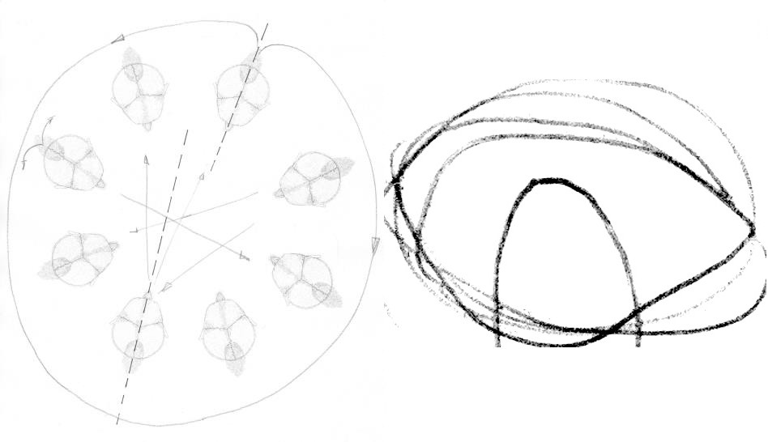

The 21st Century

Dancers and choreographers work in very different contexts. They communicate with countless colleagues in direct or indirect exchange, leave traces and influence each other mutually. Over the years, Frankfurt choreographer Norbert Pape has built a network across Europe and for his solo 21 dancers for the 21st century, he invited 20 colleagues, who are specially important to him, into the studio. In choreographic dialogue with each one, he developed the piece bit by bit. Along the way, he asked himself: what constitutes a group? Is it dependant upon bodies and their encounters in a specific space?